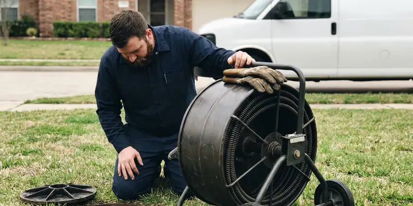

Commercial Plumbing in Marion, IA
When your business in Marion, IA needs skilled plumbing care, KFR Plumbing delivers fast and professional solutions. We understand the specific demands of commercial systems.
- Certified Backflow Testers
- Licensed & Insured
- Maintenance Contracts Available
- Prompt Commercial Service
Get a Commercial Plumber You Can Count On in Marion, IA.
Don't let plumbing problems disrupt your operations. Get in touch with us for a swift resolution.
Responsive Commercial Plumbing That Limits Downtime in Marion, IA
KFR Plumbing understands that a broken restroom or backed-up kitchen drain can close your business for the day. Our plumbers respond quickly, communicate with your facility manager and document every job for your records.
Our expertise includes:
- Backflow prevention device installation and testing
- Commercial drain cleaning and high-pressure jetting
- High-efficiency commercial water heater repair and installation

Additional Plumbing Maintenance Services in Marion, IA
Our maintenance and specialty plumbing services in Marion, IA protect your home year-round and extend the life of every system.


Customers
Why Choose KFR Plumbing for Commercial Plumbing in Marion, IA?
Choosing the right commercial plumber means selecting a partner who understands the unique challenges of business plumbing systems. Our team is equipped with modern diagnostic tools and proven techniques to resolve even the most complex issues efficiently.
- Minimal Downtime, We schedule disruptive work before opening, after closing or on weekends.
- Code Compliant, Our work satisfies commercial plumbing, backflow and health department requirements.
- Detailed Records, You get invoices, photos and test reports for every service visit.
Citywide Coverage
We serve businesses throughout Marion, from downtown storefronts to industrial parks and suburban shopping centers. Our trucks carry commercial-grade parts so most repairs are completed in one visit.
Experienced Team
Each technician has worked in restaurants, medical facilities and multi-family buildings. They understand health codes, tenant concerns and the pressure of keeping a business running.
Safety-First Approach
For every commercial plumbing service, KFR Plumbing emphasizes careful planning and execution to guarantee safety and compliance. We conduct thorough inspections and follow all necessary regulations to provide secure, long-lasting solutions for your business in Marion.
Trusted Certified Marion Plumbing Services Professionals
At KFR Plumbing, we take pride in providing certified plumbing services throughout Marion, IA. Backed by leading industry credentials, our experienced plumbers combine technical skill with genuine customer care. Whether it is repair, installation, or maintenance, we follow strict safety and quality standards to deliver lasting results you can trust.
Call Us Now PHCC Plumbing Contractor Recognition
PHCC Plumbing Contractor Recognition Better Business Bureau (BBB) Accreditation
Better Business Bureau (BBB) Accreditation Angi Certified Pro
Angi Certified Pro ISO 9001 Quality Management Certification
ISO 9001 Quality Management CertificationTrusted Commercial Plumbing Services in Marion, IA
Backflow Testing and Repair in Marion
Most water providers require annual testing of backflow prevention assemblies on commercial properties. We test reduced pressure zone, double check and pressure vacuum breaker assemblies with certified gauges. When a device fails, we rebuild it with manufacturer kits from Watts, Wilkins or Febco. We submit the results to your water provider so you stay in compliance.

Commercial Drain Cleaning & Hydro-Jetting in Marion
Commercial drains handle far higher volumes and different types of waste than residential ones, leading to more frequent and stubborn clogs. Our services include powerful hydro-jetting, which uses high-pressure water streams to scour pipe interiors, removing grease, sludge, and debris that build up in commercial kitchens and restrooms. This method is highly effective for maintaining the large diameter pipes typical in commercial settings and preventing costly backups in Marion, IA. We service all types of commercial properties, from restaurants to retail stores.
Commercial Restroom Plumbing in Marion
Busy restrooms take a beating, and a broken flushometer or leaking urinal frustrates customers. We repair and replace Sloan and Zurn flush valves, sensor faucets, wall-hung toilets and carriers. We also install ADA-compliant fixtures and grab bar backing during remodels. Quick repairs keep your facilities clean and open.
Commercial Water Heater Repair & Installation in Marion, IA
Commercial water heaters are often larger, more complex, and operate under greater stress than residential units, often requiring specialized repair and maintenance. We service all major brands including A.O. Smith, Rheem, and Bradford White commercial models, making sure your business has a consistent supply of hot water. Whether it's a gas, electric, or tankless system, our technicians are trained in diagnosing issues like pilot light failures, heating element malfunctions, or pressure relief valve problems specific to high-demand commercial use in Marion. Proper sizing and installation are crucial for efficiency and longevity.
Drain Jetting and Sewer Camera Work in Marion
Commercial drains carry grease, paper and debris that build up faster than in homes. We use high-pressure jetters to scour main lines and camera equipment to find breaks, roots and bellies. Video records help you plan repairs and budget for capital work. Preventive jetting cuts down on emergency backups.
Backflow Prevention Device Services in Marion
Backflow prevention devices are essential for protecting the public water supply from contamination, a significant concern for commercial properties in Marion. Most water providers require annual testing and certification of these devices. Our certified plumbers provide comprehensive testing, repair, and installation of backflow preventers, helping your business stay compliant and safe. We handle all types, including reduced pressure zone (RPZ) assemblies and double check valve assemblies, which are common in commercial and industrial applications. Keeping these devices in good working order is a basic safety measure.
Commercial Leak Detection & Repair in Marion, IA
Even small leaks in a commercial setting can lead to serious water damage, mold growth, and high utility bills. KFR Plumbing utilizes advanced leak detection technology, such as acoustic sensors and thermal imaging, to pinpoint hidden leaks in walls, ceilings, and underground pipes without destructive exploration. Once located, our skilled plumbers perform efficient and durable repairs to restore the integrity of your commercial plumbing system in Marion, IA.

Emergency Commercial Plumbing in Marion
A plumbing emergency can stop business operations, leading to lost revenue and potential property damage. KFR Plumbing offers rapid-response emergency commercial plumbing services throughout Marion, IA. Whether it's a major burst pipe, a severe sewage backup, or a critical water heater failure, our team is equipped to handle urgent situations 24/7. We arrive quickly, assess the problem, and implement immediate solutions to mitigate damage and restore functionality, helping your business get back on track with minimal downtime.
Commercial Plumbing Near Me in Marion, IA
When you search for 'commercial plumbing near me' in Marion, IA, KFR Plumbing is the dependable local expert ready to serve your business. Our proximity and understanding of local commercial properties mean faster response times and plumbing solutions tailored to the specific challenges faced by businesses in our area. We are committed to being your reliable, nearby commercial plumbing partner.
We know the water providers, inspectors and code requirements that apply to Marion businesses. That familiarity helps us keep your property compliant. Your operations stay on track.
KFR Plumbing at a Glance
- Fully licensed plumbing team covering Marion, IA
- 24/7 emergency service with same-day scheduling
- Clear written estimates, no hidden fees
- 4.8-star rated by 620+ Iowa customers
Marion Map
Marion Information
- Population
- 42,213
- Area codes
- Local
- Service area
- Marion and communities within 40 miles
- Nearby
- Cedar Rapids, Iowa City, Waterloo, Dubuque
For businesses in Marion, IA, dependable commercial plumbing is essential to withstand heavy usage, and our services are built to address local water conditions and the operational needs of your business.
Expert Services
Trust our professionals for reliable KFR Plumbing solutions in Marion, IA.
Our Specialized Plumbing Services in Marion, IA
At KFR Plumbing, we provide a complete range of plumbing services across Marion, IA. From leak detection to full system installations, our team ensures fast, precise, and affordable service for both residential and commercial properties. Explore our core services below:


How Our Commercial Plumbing Process Works in Marion, IA
We follow a clear, organized approach to make sure every commercial plumbing job is handled with professionalism and precision.
Request a Quote
Call (515) 308-3583 or fill out our online form to describe your commercial plumbing needs. We will gather basic information to understand the scope of work.
On-Site Assessment
A certified commercial plumber will visit your Marion business to conduct a careful inspection. We use advanced diagnostic tools to accurately identify the issue.
Transparent Proposal
Based on our assessment, we provide a detailed, upfront estimate for the required services. You'll understand all costs before any work starts.
Frequently Asked Questions About Commercial Plumbing in Marion
The cost of commercial plumbing services in Marion, IA varies widely depending on the complexity of the job. Minor repairs like a clogged drain might range from $150 to $400, while a commercial water heater replacement could be $2,000 to $8,000 or more. We provide transparent, upfront pricing after a thorough on-site assessment.
Due to the complexity, specialized equipment required, and strict regulatory compliance for commercial plumbing, DIY repairs are strongly discouraged. Attempting to fix commercial plumbing problems without proper training can lead to further damage, code violations, and potential safety hazards. Always call a licensed commercial plumber.
Yes, KFR Plumbing has specialized expertise in a wide range of commercial plumbing equipment. We regularly service, repair, and install grease traps, industrial pumps, backflow prevention devices, and commercial water filtration systems for businesses across Marion.
Yes, many commercial plumbing projects in Marion, especially installations, major repairs, or system upgrades, require permits from the local building department. This confirms the work meets safety and code standards. KFR Plumbing handles all necessary permitting processes to make sure your commercial plumbing work is fully compliant with local regulations.
Yes, we schedule work before opening, after closing and on weekends. Emergency service is available for burst pipes, backups and other pressing problems.
Yes, we offer plans covering backflow testing, drain jetting, water heater flushing and fixture inspections. Contracts help control costs and head off emergencies.
KFR Plumbing stands behind the quality of our commercial plumbing work. We offer a solid warranty on both parts and labor for all services performed. The specific terms of the warranty will be clearly outlined in your service agreement, providing peace of mind for your project.
Many restaurants need service every one to three months depending on volume. Local pretreatment rules may set a schedule, and we can help you meet it.
What People Are Saying About Our Plumbing Experts?

James P.
Our commercial plumbing system had a leak under the sink, and KFR Plumbing handled it professionally. The plumbers arrived quickly and restored everything without disruption to our customers.
Commercial Plumbing · Cedar Falls, IA
Laura S.
I scheduled a water heater replacement, and the team made the process smooth and affordable. The new unit works perfectly, and they cleaned up after completing the job.
Water Heater Replacement · Cedar Rapids, IASofia M.
Two new toilets installed in one visit, no mess left behind, and the tech even adjusted a faucet he noticed was dripping. Fair pricing and really friendly.
Toilet Installation · Cedar Falls, IA
Daniel K.
A pipe burst at 11 pm and they actually answered. The plumber showed up within the hour, shut everything down, and had us back to normal the next morning. Could not ask for more.
Emergency Plumbing · Cedar Rapids, IARobert G.
The trenchless sewer replacement saved our front yard. They walked us through the camera inspection footage first so we knew exactly what we were paying for.
Sewer Line Replacement · Cedar Falls, IA
Emily R.
I called KFR Plumbing for plumbing repair, and the technician was fast, polite, and thorough. They explained the problem clearly and fixed it the same day. I will definitely hire them again. Highly recommended!
Plumbing Repair · Marion, IA